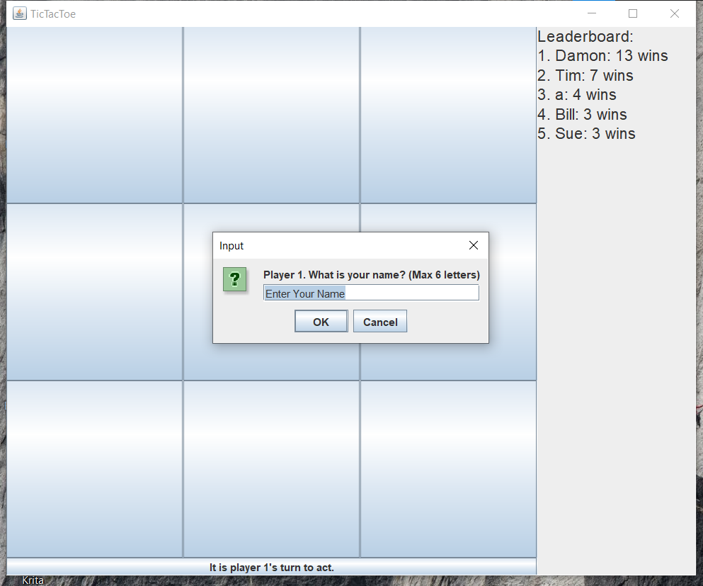
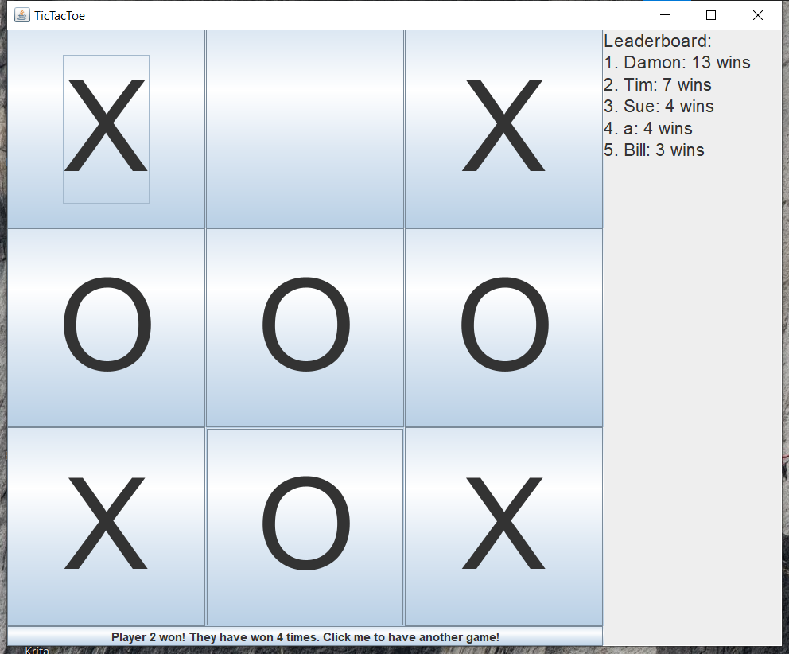

TicTacToe
See the GitHub repo here.
Introduction
This project is one of the first complete tasks I made with Java for a computer science course at my high school. This project served as my first real introduction to more complicated Java development. In addition to the use of Swing to create a GUI for the user to interact with.
Overview
The game is simple; Each player enters their name for the leaderboard, then takes
turn's placing x's or o's on the board until there is a winner or a draw. After
the game is over, the leaderboard will be updated and saved to a file. Players
will be able to play again or close the game.


The Starting Point
The first thing I did was the ever-wonderful process of creating classes. For a game like TicTacToe, I created Game, Board, Space, Player, and DisplayManager. I wanted to focus on the logic of the game itself. So I decided to make the game work on the command line first. With a day of work, the game was playable using the command line. It was time to give my project a fresh coat of paint.
Adding a GUI with Swing
Swing is a Java library designed for creating interactive apps.
Swing was a challenge for me, partly because of my inexperience
with Swing. But also because of Swing's limits and design.
For simplicity, I made the Game class control the hierarchy of
Swing components. The Space class is a button that the player
clicks on to mark it. In a larger project, I would have kept
the DisplayManager class around to manage the complexity of a GUI.
Game.java:
// TODO: Put the creation of the various components into separate functions
// Create mainFrame to serve as base
mainFrame = new JFrame("TicTacToe");
mainFrame.getContentPane().setPreferredSize(
new Dimension(
SPACE_SIZE * Board.SIZE + LEADERBOARD_WIDTH,
SPACE_SIZE * Board.SIZE + INFO_BUTTON_HEIGHT
)
);
mainFrame.setDefaultCloseOperation(JFrame.EXIT_ON_CLOSE);
mainFrame.setLayout(new BorderLayout());
// Create gamePanel to hold game panels
gamePanel = new JPanel();
gamePanel.setLayout(new BorderLayout());
gamePanel.setPreferredSize(
new Dimension(SPACE_SIZE * Board.SIZE, SPACE_SIZE * Board.SIZE + INFO_BUTTON_HEIGHT)
);
mainFrame.add(gamePanel, BorderLayout.LINE_START);
// Create spaceFrame to hold spaces
spacePanel = new JPanel();
spacePanel.setPreferredSize(
new Dimension(SPACE_SIZE * Board.SIZE, SPACE_SIZE * Board.SIZE)
);
spacePanel.setLayout(new GridLayout(3, 3));
gamePanel.add(spacePanel, BorderLayout.PAGE_START);
Space.java:
/** A space that can be taken by a player. */
public class Space extends JButton {
/** What state we are in. (Are we empty or taken by a player?) */
public SpaceState state;
public int x;
public int y;
public Space(int x, int y) {
state = SpaceState.Empty;
this.x = x;
this.y = y;
setPreferredSize(new Dimension(Game.SPACE_SIZE, Game.SPACE_SIZE));
setRequestFocusEnabled(false);
setFont(new Font("Arial", Font.PLAIN, 128));
}
}
Leaderboard
After I finished with Swing, I wanted to do more with the project
and make something unique out of it. To that end, I decided that
adding a leaderboard would be a good goal. Implementing a leaderboard
presented many new requirements, the two largest being saving a user's score
to a text file and displaying a sorted ranking of all users and their scores.
When the game starts, the players give their names. This information is saved
in the Player class, then used to find any matching names in the leaderboard
file, which will then update their score.
Game.java:
private void getPlayerName(Player p) {
while (true) {
String input = (String)JOptionPane.showInputDialog(
mainFrame,
"Player " + p.visualID + ". What is your name? (Max 6 letters)",
"Enter Your Name"
);
if (input == null) {
System.exit(1);
}
if (input.length() > 0 && input.length() <= 6) {
p.name = input;
break;
}
}
}
When a score is updated, an issue I encountered was changing the position of the player's score as seen on the screen. Swing is difficult to use when it comes to manually setting the location of a component. The way the leaderboard is set up, the components are added in order of the player's score. The parent component automatically shows them in a vertical grid, giving a clean list of values.
Leaderboard.java:
// Remove and then re-add the scores to the leaderboard, so it will display correctly
for (LeaderboardScore score : scores) {
remove(score);
}
for (LeaderboardScore score : scores) {
add(score);
score.updateText();
}
After some thinking, I came to a workable, if impractical solution. Just delete all the components and create them all from scratch again. Ideally, this would never happen, as destroying and creating something from scratch is a relatively time-consuming process, but it was easy, clear, and good enough for the project. There is no point in overcomplicating something when it isn't needed.